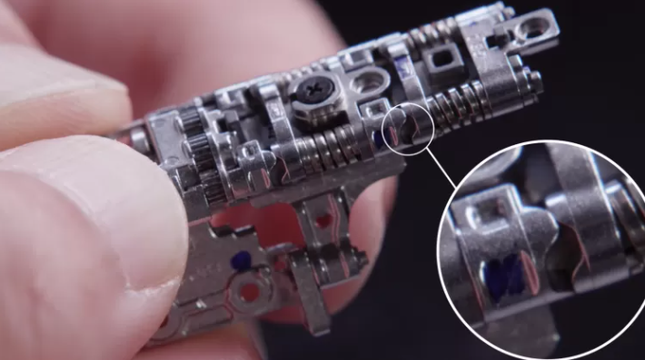

O Galaxy Z Fold 2. novo celular da Samsung com tela dobrável interna, vem ganhando elogios mundo afora em análises de sites que já receberam o produto. Aparentemente não à toa: o aparelho, que promete corrigir diversos erros da versão anterior, demorou um longo período para ser concebido e foi resultado até de ideias que vieram de um aspirador de pó.
Para se ter uma ideia, o Galaxy Fold original foi lançado em fevereiro do ano passado com vendas previstas para abril. Não rolou: um fracasso com vários problemas iniciais renderam um adiamento de cinco meses para o dispositivo começar a chegar às mãos dos consumidores que têm grana para gastar em um celular do tipo - ele ainda não tem preço no Brasil e deve chegar por aqui em outubro.
A ideia do aparelho é que ele possa ser usado como um smartphone normal na tela externa e também como um tablet enorme na tela flexível interna, mantendo um visual compacto quando fechado - se funcionar desta vez, ele pode ser considerado um "celular dos sonhos".
Nos reviews gringos até agora, ele vem só recebendo elogios, ao contrário do antecessor. O "The Verge" chamou de um "sucesso extravagante", enquanto o "Engadget" falou que é um "celular à espera de uma mudança no mundo - hardware é maravilhoso, mas o ecossistema precisa melhorar". Já a CNN norte-americana citou que a Samsung chegou próxima da "perfeição".
Entre o primeiro anúncio do Galaxy Fold e o lançamento do Galaxy Z Fold 2, transcorreram nada menos do que um ano e meio. No período, ainda houve o surgimento do Galaxy Z Flip, outro smartphone com tela flexível da marca e que funciona de forma diferente, dobrando-se na vertical como os modelos dos anos 2000.
Aparentemente o período entre o primeiro Fold e o segundo foi suficiente para a Samsung corrigir as diversas bizarrices da primeira versão - entre elas a tela externa estranha e o design das câmeras na tela flexível interna. E ainda houve tempo para reconstruir totalmente um item bem importante: a dobradiça.
A NOVA DOBRADIÇA

A experiência com o Z Flip foi muito importante para o novo Fold, já que a estrutura criada para o modelo que se abre e fecha na vertical foi levada para o "irmão gigante". É esse mecanismo que permite que o ato de abrir seja parado em várias posições, fazendo o smartphone servir como sua própria base.
O Galaxy Z Fold 2 usa um mecanismo duplo nessa dobradiça chamado CAM. Essa tecnologia tem duas estruturas em forma de crista com uma superfície plana no meio. A abertura e o fechamento são mantidas quando as cristas se encontram, enquanto modo flex (em que o celular para em diversos ângulos da abertura) é permitido quando as superfícies planas dos dois CAMs se encontram.
"O movimento de abrir e fechar é alimentado não só por magnetismo como também pela estrutura CAM, que permite uma experiência de se dobrar mais estável e com menos magnetismo. O Z Fold 2 ainda tem força de retenção maior que mantém o celular aberto em 180 graus, prevenindo o dispositivo de fechar acidentalmente", afirma SeungHyun Hwang, engenheiro do grupo de pesquisa avançada em mecânica da Samsung.
Em relação ao Z Flip, a Samsung ainda aumentou as tais estruturas CAM e as molas, já que o aparelho tem um tamanho maior de tela. Ao mesmo tempo, a empresa teve o desafio de manter a dobradiça pequena no design do aparelho - nos vídeos mostrados até agora ela ainda assim é responsável por deixar o dispositivo mais "gordinho" em um dos lados.
IDEIA VEM DO ASPIRADOR DE PÓ
Na construção desse mecanismo da dobradiça, a Samsung ainda se deparou com outro problema: lidar com o espaço que ficava entre a carcaça da dobradiça e o mecanismo interno. É esse espaço que permite o celular se abrir e fechar, dando espaço para a dobradiça se mover, mas ao mesmo tempo precisa ser ocupado.
A solução foi uma "tecnologia de varredura", que usa elasticidade para fechar esse espaço até quando ele está em movimento. A Samsung literalmente ocupou o espaço com fibras semelhantes às encontradas em escovas. Essa estrutura, contudo, tinha que funcionar sob três condições:
era preciso que a "tecnologia de varredura" aguentasse ao menos os 200 mil movimento de abrir e fechar que a Samsung garante no smartphone;
Elasticidade: mesmo tendo a durabilidade, ela precisa se manter elástica. Pela dobradiça ser composta por 60 componentes que podem sofrer variações, a estrutura de varredura precisa manter a elasticidade em meio a variações;
Tamanho: mesmo depois dessas duas condições alcançadas, o tamanho precisa ser pequeno, já que estruturas pesadas e grossas não iriam cair no gosto do usuário.
O maior desafio foi no terceiro quesito. Hee-Cheul Moon, engenheiro da mesma área de Hwang na Samsung, apontou que a empresa recebeu 98 sugestões e ideias para essa "tecnologia de varredura", mas nenhuma funcionou. Até que um aspirador de pó salvou a equipe.
"Eu tive a ideia de uma escova em um aspirador, igual aos que eu usava em minha casa. A escova em um aspirador é um corpo elástico feito de fibras e isso parecia pequeno o suficiente para nosso dispositivo. Fizemos amostras e no final desses experimentos conseguimos processar fibras que eram menores do que 1mm", cita Moon.
Com a tecnologia, a dobradiça passou a contar com uma estrutura que previne danos ao repelir poeira e sujeira. No entanto, o Z Fold 2 segue com um ponto crucial negativo: não tem nenhuma certificação de resistência a água ou poeira, mesmo custando nada menos que US$ 2 mil (cerca de R$ 11.100).
Com a dobradiça, essa varredura foi desenvolvida em uma estrutura que previne danos ao repelir poeira e sujeira ao mesmo tempo em que mantém elasticidade e durabilidade.
QUER SABER MAIS SOBRE O GALAXY Z FOLD 2 VEJA A SEGUINTE ANÁLISE: